반찬(진열)쇼케이스
반찬가게 창업비용, 반찬쇼케이스에서 줄이면 안 되는 부분
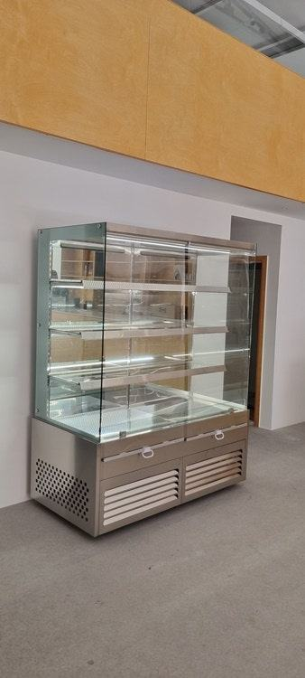
반찬가게 창업비용에서 반찬쇼케이스는 줄일 수 있는 옵션과 줄이면 안 되는 기능을 나눠 봐야 합니다. 온도 유지, 김이 서리지 않는 유리, 반찬 용기에 맞는 단차는 매일 판매에 바로 영향을 주니 지키고, 외관 마감은 예산에 맞춰 조정하시는 편이 낫습니다.
안녕하세요. 반찬가게와 델리 매장에 들어가는 진열 냉장고를 직접 설계하는 한성쇼케이스입니다.
반찬가게 창업을 앞둔 사장님들은 임대료, 주방 설비, 인테리어, 재료비까지 계산하다 보면 결국 "어디서 줄여야 하지?"라는 고민에 닿게 됩니다.
그때 가장 먼저 후보에 오르는 게 쇼케이스이기도 하죠.
그런데 반찬가게는 당일 만든 반찬을 냉장 상태로 보여 주며 파는 업종이라, 쇼케이스가 멈추거나 김이 서려 안이 안 보이면 그날 장사가 바로 흔들립니다.
오늘은 반찬가게 창업비용 안에서 쇼케이스 예산을 어떻게 나누면 좋은지, 줄여도 되는 부분과 지켜야 하는 부분을 구분해 보겠습니다.
1. 설비 예산을 나누는 순서
반찬가게 설비는 크게 주방 쪽(조리·보관)과 홀 쪽(진열·판매)으로 나뉩니다. 주방 냉장고는 손님 눈에 보이지 않으니 기능 위주로 고르고, 손님이 보는 반찬쇼케이스는 기능과 함께 보이는 모습까지 챙겨야 하는 자리입니다.
예산이 빠듯하다면 진열 길이를 먼저 정하세요. 처음부터 매장 벽면을 다 채우기보다 하루에 실제로 내놓을 반찬 가짓수를 세어 보고, 그만큼의 진열 면적부터 잡는 편이 낭비가 적습니다.
- 하루 진열할 반찬 가짓수와 용기 크기를 적어 보세요.
- 주방 보관용과 홀 진열용 냉장 설비를 따로 계산하세요.
- 반찬을 채우는 사람이 앞에서 넣는지 뒤에서 넣는지 정해 두세요.
2. 줄이면 안 되는 기능
반찬은 종류마다 성질이 달라 김치류는 낮은 온도가 꾸준히 유지돼야 하고, 나물류는 마르지 않게 지켜야 합니다.
문을 자주 여닫아도 온도가 크게 흔들리지 않는 냉각 구조는 줄이지 않는 게 좋습니다.
유리 사양도 마찬가지입니다. 조리한 반찬을 넣고 문을 여닫다 보면 유리에 김이 서리기 쉬운데, 김서림 방지 기능이 들어간 페어 유리가 아니면 손님이 반찬을 제대로 볼 수 없습니다.
반찬이 안 보이면 맛을 보여 줄 기회 자체가 사라집니다.
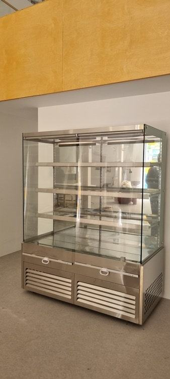
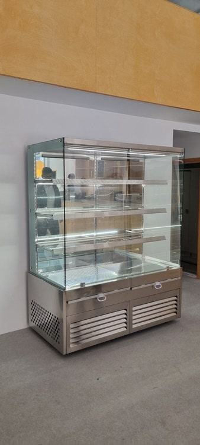
3. 용기에 맞춘 단차와 선반
반찬가게는 같은 크기 용기를 줄지어 놓는 곳도 있고, 큰 통에 담아 덜어 파는 곳도 있습니다. 단차를 1단부터 4단까지 어떻게 나누는지, 선반을 이동식으로 할지에 따라 진열 효율이 달라집니다.
용기보다 단 높이가 너무 높으면 냉기가 위로 새고, 너무 낮으면 뚜껑을 열 때마다 걸립니다. 지금 쓰실 용기 하나를 실제로 재서 알려 주시면 단 높이를 거기에 맞춰 잡아 드립니다.
4. 예산에 맞춰 조정할 수 있는 부분
프레임 색상은 블랙, 화이트, 실버, 골드 등에서 고를 수 있고, 조명도 주광색, 주백색, 전구색 가운데 매장 분위기에 맞춰 정할 수 있습니다.
이런 외관 요소는 매장 콘셉트에 따라 우선순위를 조정하기 좋은 항목입니다.
다만 조명은 반찬의 색감을 살리는 역할도 하니 아예 빼기보다 색을 고르는 쪽으로 생각해 보세요. 마감 소재를 바꾸면 제작 기간이 달라질 수 있어, 오픈 날짜가 정해져 있다면 상담 초기에 일정부터 맞추시는 게 좋습니다.
- 프레임 색상과 마감 소재는 매장 인테리어와 함께 정하세요.
- 조명 색은 주력 반찬의 색감을 기준으로 고르세요.
체크리스트
- 하루 진열 반찬 가짓수와 용기 실측
- 문을 여닫아도 버티는 냉각 구조
- 김서림 방지 페어 유리 포함 여부
- 단차·선반 구성과 이동식 여부
- 프레임 색상·조명 색과 제작 기간
- 고장 시 A/S 연락처와 대응 방식
1인 가구 상권 반찬가게에 넣은 스테인리스 반찬쇼케이스
소개를 받고 직접 연락을 주신 대표님의 매장이었습니다. 젊은 1인 가구가 많은 지역에 자리를 잡은 만큼, 흔히 떠올리는 반찬가게보다 깔끔하고 요즘 감각에 맞는 모습을 원하셨습니다.
디자이너가 매장을 직접 찾아가 분위기와 원하시는 콘셉트를 듣고 설계를 시작했습니다.
매장 인테리어가 따뜻한 톤이라 쇼케이스까지 같은 느낌으로 가면 청결한 인상이 약해질 수 있었습니다. 상담 끝에 스테인리스로 제작했고, 내부에는 오래 쓰는 LED 조명을 넣어 반찬이 또렷하게 보이도록 했습니다.
맞춤 제작이라 시간은 조금 더 걸렸지만, 당일 반찬을 파는 매장인 만큼 설치 뒤 조명이나 수리가 필요할 때 A/S 전담팀이 빠르게 대응하도록 안내해 드렸습니다.
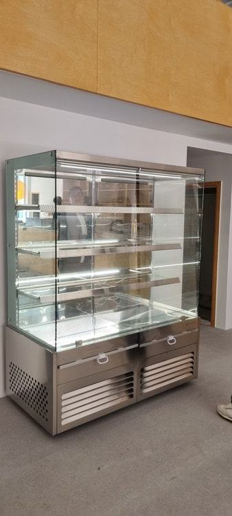
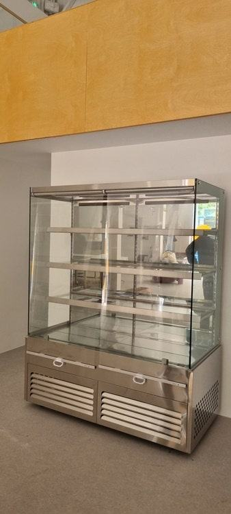
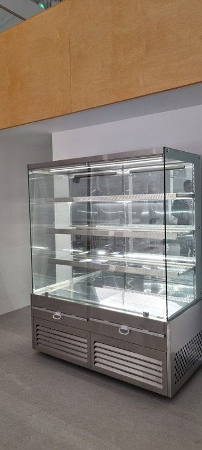
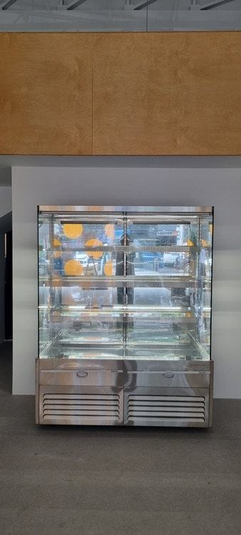
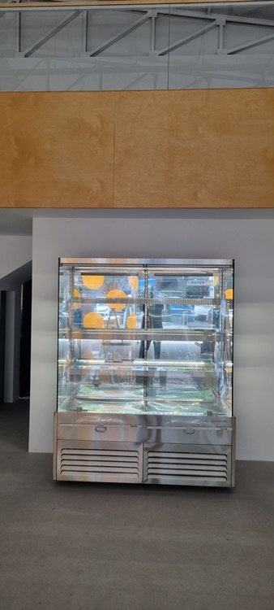
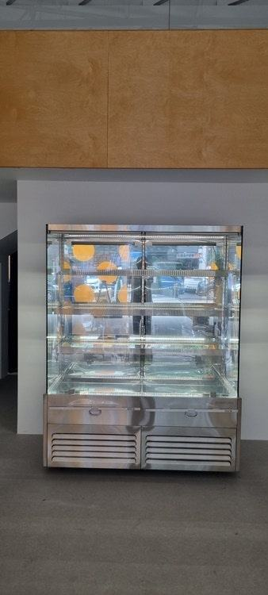
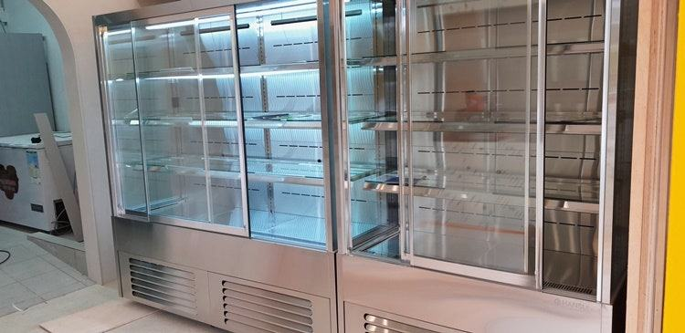
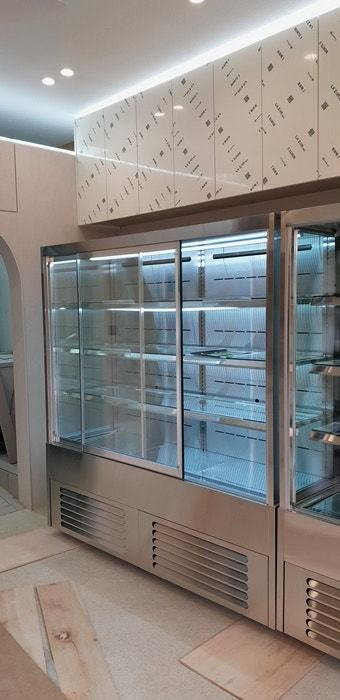
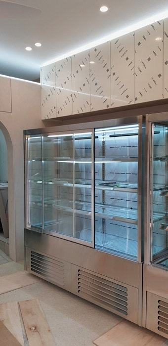
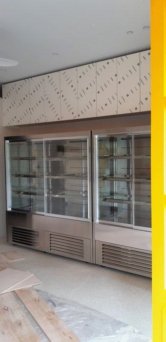
자주 묻는 질문
반찬가게 창업비용을 줄이려면 쇼케이스를 작게 해도 될까요?
실제로 하루에 내놓을 반찬 가짓수에 맞춘다면 작게 시작해도 괜찮습니다. 다만 크기를 줄이더라도 냉각 구조와 유리 사양은 그대로 두시길 권해 드립니다.
반찬 종류에 따라 온도를 다르게 할 수 있나요?
적정 온도는 반찬과 용기에 따라 다릅니다. 김치류처럼 낮은 온도가 필요한 품목과 나물류처럼 건조를 막아야 하는 품목의 비중을 알려 주시면 구역 구성을 함께 상의해 드립니다.
스테인리스 마감은 제작 기간이 더 걸리나요?
소재와 구성에 따라 기간이 달라질 수 있습니다. 오픈 날짜가 정해져 있다면 상담 초기에 말씀해 주셔야 일정에 맞춰 설계를 진행할 수 있습니다.
매장 조건에 맞춰 만드는 한성쇼케이스
원하시는 제품 사진과 설치할 공간 사진만 보내 주셔도 매장에 맞는 구성을 추천해 드립니다.
- 전국 240여 개 A/S 전담 센터 운영
- 본사 대량 자재 매입으로 품질 대비 합리적인 가격
- 유럽제·삼성 냉각 콤프레셔 적용
- 국내 최초 쇼케이스 전문 디자이너 상주
매장 폭과 원하는 진열 구성을 알려 주세요. 실측과 견적을 안내해 드립니다.
031-986-2458